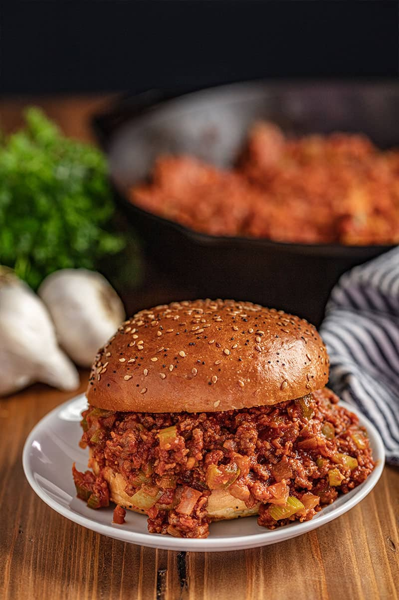

Sloppy Joe
Sloppy Joe
Sloppy Joes can be amazing, didn’t you know? It doesn’t have to be a quick, thrown together meal from a can that kids can tolerate. It can be flavorful and packed full of delicious vegetables. It can have texture! PRO TIP: Toast your buns before placing your meat on. This will take your sloppy Joes to the next level! Simply place open-face on a baking sheet and put under the broiler setting on your oven. Broil for 1 to 2 minutes until lightly browned, but keep an eye on them so they don’t burn.
Ingredients (four servings)
- ½ pound lean ground beef
- ½ medium onion diced
- ½ medium green bell pepper diced
- 1 ribs celery diced
- ½ (8 ounce) can tomato sauce
- ½ (6 ounce) can tomato paste
- 1 tablespoons Worcestershire sauce
- 2 cloves garlic crushed
- ½ tablespoon brown sugar
- ½ teaspoon salt
- ½ teaspoon ground mustard
- ¼ teaspoon crushed red pepper flakes
- 4 hamburger buns
Instructions
- In a large skillet over medium-high heat, cook ground beef and yellow onion together, stirring occasionally, until beef is browned and cooked through.
- Drain any excess fat from the skillet and return skillet to heat.
- Add in bell pepper, celery, tomato sauce, tomato paste, Worcestershire sauce, garlic, brown sugar, salt, ground mustard, and red pepper flakes. Stir to combine.
- Bring to a simmer and reduce heat to medium low. Simmer for 15 to 30 minutes. Simmering time depends on how crisp you want the vegetables.
- Serve meat hot on toasted buns.
Notes
You can adjust the amount of vegetables to your own personal taste. However, the vegetables add extra flavor and amazing texture to this historically mushy sandwich of our childhood, and we do recommend sticking to the recipe as closely as possible.